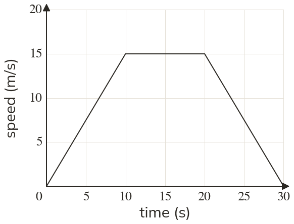
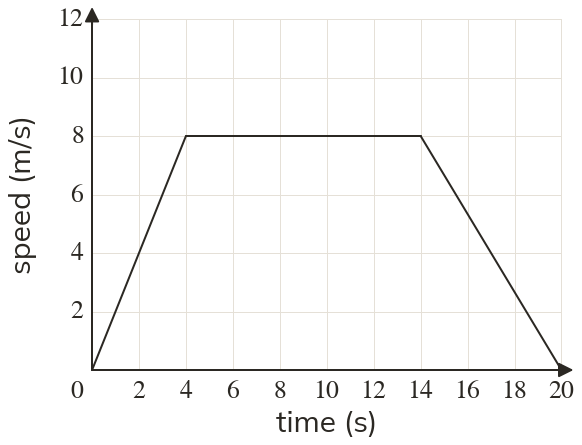
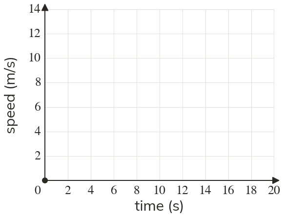

Westonbirt Maths · Direct and Inverse Proportion
Speed-Time Graphs
Name: ______________________ Date: ____________
1
Describe each stage of the motion.
2
Use the graph to find (a) the speed after seconds (b) how long the speed stays constant (c) when it starts to slow down.
3
A speed-time graph is horizontal from to in seconds and m/s. What does this section mean?
4
Tom says a section sloping down to the time axis means the bike went back home. Is he right?
5
A speed-time graph rises from to in seconds and m/s. What is happening, and what is the speed at seconds?
Ext
Draw the speed-time graph: from rest to m/s in seconds, steady for seconds, then stopping in seconds.


